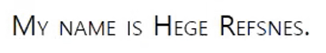
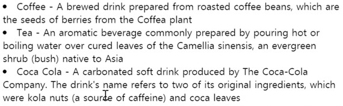
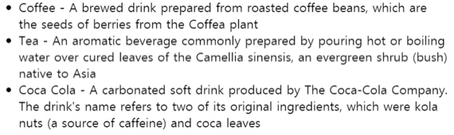
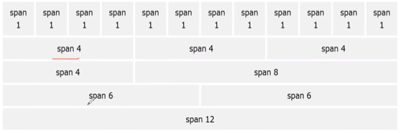
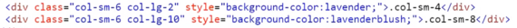

충남대학교 컴퓨터공학과 이규철 교수님의 "웹 프로그래밍" 강의를 필기한 내용입니다.
다소 잘못된 내용과 구어적 표현 이 포함되어 있을 수 있습니다.
몰랐던거만 캐치해보자고
Cascading 의 의미
- Cascade : [명사] 작은 폭포
- 폭포수가 위에서 아래로 물이 흐르듯이, 상위 컴포넌트에서 하위 컴포넌트로 스타일이 적용된다는 의미를 가짐
CSS를 사용하는 이유
- 스타일에 관한 것을 분리해 스타일만 교체하면 html을 고칠 필요 없이 손쉽게 스타일을 바꿀 수 있기 때문
Selector의 종류
Simple selector: 단순 element이름, class, id- id나 class는 숫자로 시작할 수 없음에 주의할 것
Combination selector: 띄어쓰기나 > 로 상하위 관계 표현하는거Pseudo-class selectors: :hover 등 element의 상태에 따라 선택하는 거Pseudo-element selectors: element의 일부분만 선택한다는데 뭔소린지 모르겠음Attribute selectors: 특정 속성의 특정 값을 가지는 element만 선택하는 것- 특정 attribute를 가지는 element들을 선택하는 것은
[]를 사용하면 된다 - 그리고 특정 값이 attribute value에 포함되는 element 를 선택하는 것은
*=를 사용하면 된다
- 특정 attribute를 가지는 element들을 선택하는 것은
/* href attribute 를 가지는 놈을 선택 */
[href] {
...
}
/* attribute-value에 thoth가 포함된 놈을 선택 */
[href*='thoth'] {
...
}
/* a tag 중 attribute-value에 thoth가 포함되는 놈을 선택 */
a[href*='thoth'] {
...
}!important라는게 있는데 얘를 붙여주면 id보다도 높은 제일 높은 우선순위가 되어 적용된다 (e.g.color: black !important;)
CSS 적용 순서
- head태그를 읽고 나서 body로 가기 때문에 inline style이 가장 나중에 적용돼 우선순위가 높아진다
- head태그 안에서는 그냥 나중에 적어준게 적용된다 (link태그 아래 style 태그가 있으면 style 태그의 내용이 적용됨)
색상 포맷
#형식#RRGGBB순서로 각각 16진수의 값이 들어감#000000은 흰색을 나타내고#FFFFFF는 검은색인거 잊지 말것- 세 숫자들이 16보다 작은 경우에는
#RGB이렇게 쓸 수도 있다 - 그리고
#RRGGBBAA로 8숫자를 이용해 투명도를 표현할수도 있고 - 투명도를
#RGBA이렇게 쓸 수도 있다
- rgb, rgba
#RRGGBB에서의 16진수들을 10진수로 나타낸 것- 즉, rgb(0, 0, 0)은
#000000와 같고 흰색임 - 그리고 rgb(255, 255, 255)는
#FFFFFF와 같고 검은색이 된다 - 그리고 rgba는 불투명도인 alpha가 붙게 되며 0~1의 값을 가지고 0이면 완전투명, 1이면 완전불투명하게 된다
- hsl, hsla
- h는 색원반에서의 각도를 나타내며 0~360의 값을 가짐
- s는 채도(약간 물빠진 색이라고 생각하면 됨)를 나타내며 100~0%의 값을 가짐 : 100%이면 원색, 0%이면 회색이 된다
- l은 밝기를 나타내며 이것도 100~0%의 값을 가짐 : 100%이면 원색, 0%이면 흰색이 된다
- hsl(180, 100%, 100%)뭐 이런식으로 표현하는듯
- hsla는 rgba처럼 불투명도를 나타내는 값도 포함시키는 것임
background
opacity: rgba대신 투명도를 지정해줄 수 있는 속성 - 마찬가지로 0~1의 값을 가진다background-image: url();:background-image속성은url()와 함께 써야된다는 것 잊지말거background-repeat:background-image의 경우에는 디폴트로 이미지의 크기를 조정하기 않고 가로세로 반복을 하게 됨repeat-x: 가로축 방향으로만 반복하고 세로축으로는 화면을 채움repeat-y: 세로축 방향으로만 반복하고 가로축으로는 화면을 채움no-repeat: 반복하지 않음
background-position: 이미지의 위치 지정 가능 - right top이면 오른쪽 위에 이미지가 위치하게 됨background-attachment: 이미지의 display지정 가능 - 일반 display 속성마냥 fixed를 주면 스크롤을 해도 화면에 고정돼있게 된다background: flex마냥 축약형 표현이 존재함
background : {{ background-color }} {{ background-image }} {{ background-repeat }} {{ background-attachment }} {{ background-position }}- 위와 같은 순서로 적어주면 된다
Box model
- width와 height 속성은 content의 크기를 조절해주는 거랜다 - padding, border, margin 은 저 속성의 값에 포함되지 않는댄다
- 따라서 element의 크기를 정할떄는 width, height뿐 아니라 padding, border도 고려해줘야 된다는 것
- 또는 다음과 같은 방법으로도 해결 가능하다 -
box-sizing: border-box;를 해주면 border까지 포함한 너비나 높이를 width, height로 지정 가능하다 - 그리고 max-width, max-height, min-width, min-height등의 속성으로 그리드의 minmax처럼 반응형 설계가 가능하다
Border
- 너가 지금까지 써오던
5px solid black은border-width,border-style,border-color의 축약형이라 할 수 있다 - border-width는 margin이나 padding마냥 값을 여러개 줄 수 있다
- 값을 하나 주면 모든 면이 동일한 굵기
- 값을 두개 주면 top-bottom이 첫번째 굵기, left-right가 두번째 굵기로 지정됨 - 잊지말어라
- 값을 세개 주면 top, left-right, bottom순으로 적용됨
- 값을 네개 주면 알다시피 시계방향으로 적용된다
- border-style이나 border-color도 마찬가지로 적용 가능하다
- border를 지정할때는 border-style이 반드시 있어야 한다 - style이 없으면 border가 표시되지 않음
- border-radius의 값은 반지름이다
- 특정 꼭짓점만 radius를 지정하기 위해서는 border-top-right-radius등으로 하거나 값을 4개를 주어 오른쪽 위부터 시계방향으로 돌게 할 수 있다
Margin
margin: auto를 통해서 이놈을 중앙배열 시키는 것도 가능하다 - 좌우가 동일하게 반응형으로 들어감- inherit은 알다시피 부모 값 그대로 사용
collapse: 이건 속성이 아니라 현상인데 두 element에 대해 위 element에 margin-bottom이 정의되어 있고 아래 element에 margin-top이 정의되어 있을 경우 브라우져는 이 둘중 가장 큰 값으로 둘 사이의 간격을 지정한다 - margin이 겹치게 되는 셈- 예를들어 윗쪽 div의 margin-bottom이 20px이고 아랫쪽 div의 margin-top이 50px이라면 이 둘 사이의 간격은 70px이 아니라 50px이 되는 것
- 이 현상은 top-bottom의 관계에서만 나타난다 - left-right에서는 이러한 현상이 나타나지 않음
Text
text-align: justify;로 텍스트 배치를 양옆으로 stratch시킬 수 있다vertical-align으로 높이에 대한 배치를 해 줄 수 있으나 inline tag에서만 가능했던거같다text-transform: uppercase;으로 텍스트의 대소문자를 해결할 수 있다 - capitalize로 단어 첫글자만 대문자로 하는 것이 가능text-indent: 50px;로 문단의 첫 문장을 들여쓰기 하는 것이 가능하다letter-spacing,word-spacing의 속성을 이용해 글자간, 단어간 간격을 설정하는 것이 가능하다line-height속성으로 문장 간 간격을 설정할 수 있다 - 얘는 단위가 없는 값을 더 선호한다 - 단위없는 값이 사용되었을 경우 반응형으로 움직이기 때문white-space속성은 한번써봤제?nowrap의 경우에는 개행을 하지 않고 컨테이너를 빠져나감,\n도 무시하고 br태그만을 이용해서 개행이 이루어진다. 또한 탭이나 스페이스들은 전부 스페이스 하나로 변환된다.normal의 경우에는 컨테이너를 빠져나갈경우 개행되며\n에 의해서도 개행되게 된다. 다만 탭이나 스페이스는 스페이스 하나로 변환된다pre의 경우에는 pre태그마냥 컨테이너를 빠져나가는 것으로는 개행이 안되고\n에 의해서만 개행이 된다. 그리고 탭이나 스페이스도 그대로 보여주게 된다
text-shadow: 얘는 shadow가 뒤에 깔리고 그 위에 텍스트가 올라가는 형식으로 이해를 한다면 첫 두개의 값은 뒤에 깔리는 shadow의 위치를 나타내는 값이다. 그리고 세번째 값은 번짐의 정도, 네번째는 색상이다- 예를들어
text-shadow: 2px 3px 5px gray의 경우에는 shadow의 위치가 오른쪽으로 2px, 아래로 3px 내려가며 번짐의 정도는 5px, 그림자의 색은 gray가 되어벌임
- 예를들어
Font
- 일단 Serif는 타임즈 글씨마냥 삐죽삐죽 튀어나와있는거고 Sans-serif는 그런게 없는거다
- Serif가 인쇄물에 적합하고 컴퓨터 화면은 Sans-serif가 더 가독성이 좋댄다
- font는
font-family속성으로 적용되며 첫번째 값으로 준 폰트가 적용되나 이게 적용되지 않을 경우를 대비해 두세번째 값도 대체폰트로 넣어주더라 font-style은 italic과 같은 기울기 등의 효과를 주는데 활용.oblique라는 값도 있는데 italic이랑 동일하며 랜더링 과정의 차이만 있고 보통 italic을 많이 쓴댄다font-weight은 알다시피 폰트의 두께이다font-variant: small-caps;로 아래와 같은 효과를 주는 것이 가능하다

- font-size 의
em,ex:em은 대문자 M의 너비를 1로 잡은 값이고ex는 소문자 x의 높이를 1로 잡은 값이다. 글자 크기의 디폴트는 16px이기 때문에 1em은 16px와 같다 font라는 것을 통해 축약형 표현이 가능하다
font: {{ font-size }} {{ font-variant }} {{ font-weight }} {{ font-size/line-hight }} {{ font-family- 구글 웹폰트 사용하기 - 폰트 페이지에서 download font 하지 말고 select this font하면 CDN이나 @import로 가져올 수 있는 링크를 보여준다
Visibility
display: none;을 통해 화면에서 아예 지워버리는 것과는 다르게visibility: hidden;을 통해서도 표시되지 않게 할 수 있다. 다만, 이놈은원래 이놈이 차지하던 자리까지 없어지지 않는다 - 텅 빈상태로 남아있게 된다 이말이야
Link
a:link: unvisited linka:visited: visited linka:hover: mouse-over eventa:active: onclick eventhover앞에는 link와 visited가 정의되어 있어야 하고active앞에는 hover가 정의되어 있어야 한다? - 아니 안해도 되던데?
List
list-style-type으로 각 list의 스타일을 바꿔줄 수 있다- none으로 했을 경우 text의 위치는 그대로 남는다 - margin, padding을 이용해 위치를 조정해줄 수 있다
list-style-image: url();을 통해 이미지를 불러오는 것도 가능하다list-style-position으로 list icon의 위치를 지정해 줄 수 있다inside의 경우

outside의 경우

list속성으로 축약형 표현도 가능하다
list: {{ list-style-type }} {{ list-style-position }} {{ list-style-image }}Table
- 셀 안에서의 텍스트 위치는
vertical-align을 통해 가능하다 :nth-child를 통해 다양한 스타일링이 가능하다 - 가령,tr:nth-child(even)으로 짝수번째 열만 스타일링을 해주는 것이 가능하다
Bootstrap4
- CDN을 이용한 설치는 아쉽게도 4개의 라이브러리를 CDN으로 받아와야 된다
- CDN을 이용한 설치를 하면 다른 bootstrap을 사용하는 웹페이지에 있다 왔을 경우에 bootstrap이 캐시에 남아있기 때문에 재요청을 하지 않아 좀 더 빠르게 페이지가 로드된다
- meta의 viewport는 vscode 기본 설정을 써도 된다. 즉,
<meta name="viewport" content="width=device-width, initial-scale=1">로 해주면 되더라 - mobile device 에 따른 대응도 하기 위함
Grid System
Container
- 부트스트랩은 element를 담기 위한 container를 제공함
.container: 고정된 사이즈지만 반응형을 지원함 - 양옆은 동일한 너비로 비워지게 됨.container-fluid:width=100%으로 화면 너비를 다 채우는 컨테이너
Column
- 부트스트랩은 전체 container를 12분할한 column을 제공한다

- 위의 공간을 땅따먹기하면됨
- 그리고 column에 대해 기기마다 다른 설정이 되어 있는 클래스들을 제공한다
- 아래의 클래스들은 접두어로 이 뒤에 숫자들이 붙어 grid column을 구성하게 된다 -
.col-4이런식으로.col-: 가장 작은 스마트폰 정도의 디바이스(~576px).col-sm-: 태블릿 정도 사이즈(576px~768px).col-md-: 노트북 정도 사이즈(768px~992px).col-lg-: 데스크탑 정도 사이즈(992px~1200px).col-xl-: 큰 모니터(1200px~)
- 그리고 숫자들을 적지 않으면 걍 남은 부분에 대해 같은 크기로 나눠먹는다
- 한 row에 있는 col들은 숫자의 합이 12가 되어야 한다 - 넘으면 줄바꿈이 들어감

- 그리고 위처럼 클래스를 여러개 지정해서 화면크기에 따라 대응을 할 수도 있더라
Grid system hierarchy
- 하나의 그리드를 담는 요소로
.container가 사용되고, 그 아래.row, 말단에.col이 들어가게 됨 - 반드시 위와 같은 계층구조를 지켜야된다 -
.container안에.container가 들어갈 수는 없는 노릇이다 이거야